2026 National 5 Biology - Paper 1 questions
Source: Scottish Qualifications Authority (SQA) / Qualifications Scotland. This is a StemInteract HTML companion, not an official HTML edition. Selectable text is supplied alongside original page images. Use the images or original PDF for equations, powers, fractions, vector notation, tables and diagrams; text extraction cannot fully preserve mathematical layout.
Jump to a question
PDF page 1
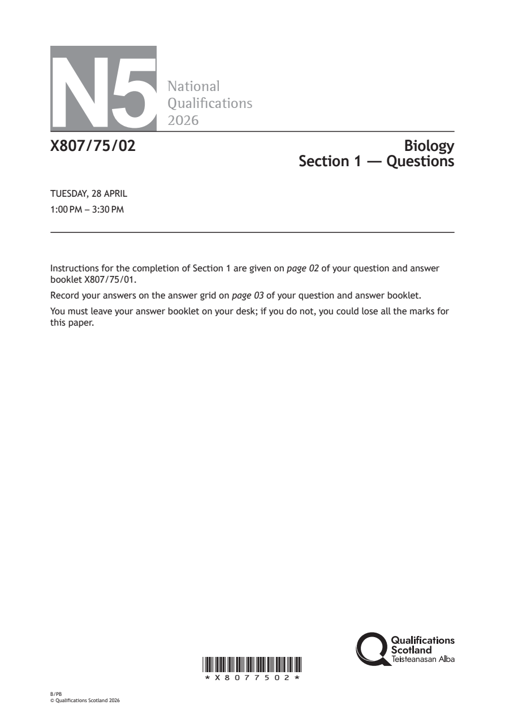
Selectable page text
N5
National
Qualications
2026
X807/75/02 Biology
Section 1 — Questions
TUESDAY, 28 APRIL
1:00 PM – 3:30 PM
Instructions for the completion of Section 1 are given on page 02 of your question and answer
booklet X807/75/01.
Record your answers on the answer grid on page 03 of your question and answer booklet.
You must leave your answer booklet on your desk; if you do not, you could lose all the marks for
this paper.
*X8077502*
B/PB
© Qualifications Scotland 2026PDF page 2
Paper 1, Question 1Paper 1, Question 2Paper 1, Question 3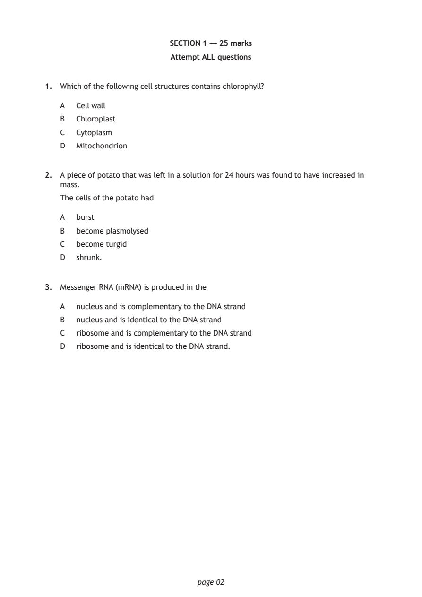
Selectable page text
SECTION 1 — 25 marks
Attempt ALL questions
1. Which of the following cell structures contains chlorophyll?
A Cell wall
B Chloroplast
C Cytoplasm
D Mitochondrion
2. A piece of potato that was left in a solution for 24 hours was found to have increased in
mass.
The cells of the potato had
A burst
B become plasmolysed
C become turgid
D shrunk.
3. Messenger RNA (mRNA) is produced in the
A nucleus and is complementary to the DNA strand
B nucleus and is identical to the DNA strand
C ribosome and is complementary to the DNA strand
D ribosome and is identical to the DNA strand.
page 02PDF page 3
Paper 1, Question 4Paper 1, Question 5Paper 1, Question 6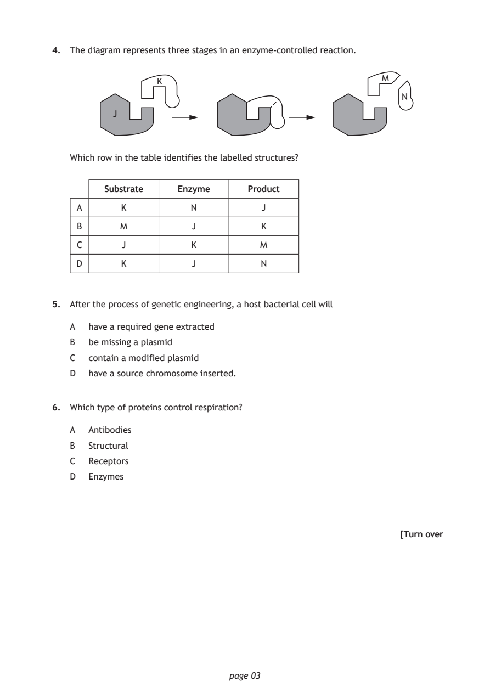
Selectable page text
4. The diagram represents three stages in an enzyme‑controlled reaction.
M
K
N
J
Which row in the table identifies the labelled structures?
Substrate Enzyme Product
A K N J
B M J K
C J K M
D K J N
5. After the process of genetic engineering, a host bacterial cell will
A have a required gene extracted
B be missing a plasmid
C contain a modified plasmid
D have a source chromosome inserted.
6. Which type of proteins control respiration?
A Antibodies
B Structural
C Receptors
D Enzymes
[Turn over
page 03PDF page 4
Paper 1, Question 7Paper 1, Question 8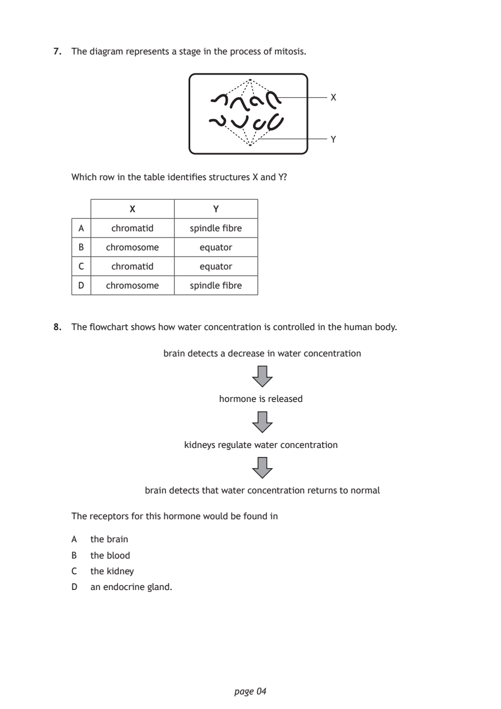
Selectable page text
7. The diagram represents a stage in the process of mitosis.
X
Y
Which row in the table identifies structures X and Y?
X Y
A chromatid spindle fibre
B chromosome equator
C chromatid equator
D chromosome spindle fibre
8. The flowchart shows how water concentration is controlled in the human body.
brain detects a decrease in water concentration
hormone is released
kidneys regulate water concentration
brain detects that water concentration returns to normal
The receptors for this hormone would be found in
A the brain
B the blood
C the kidney
D an endocrine gland.
page 04PDF page 5
Paper 1, Question 9Paper 1, Question 10Paper 1, Question 11Paper 1, Question 12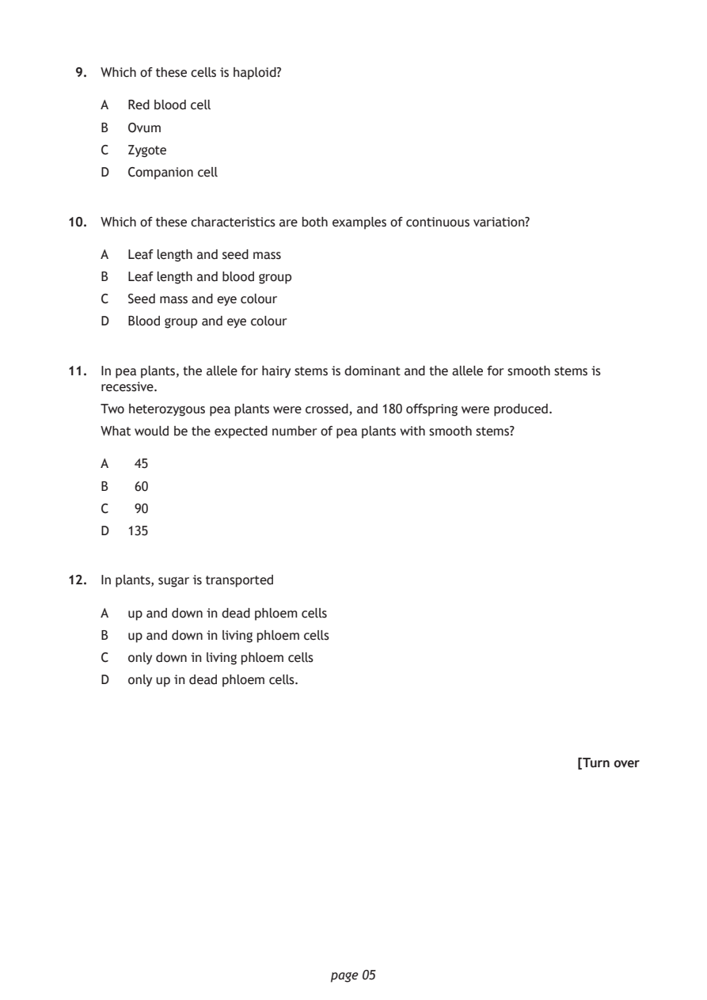
Selectable page text
9. Which of these cells is haploid?
A Red blood cell
B Ovum
C Zygote
D Companion cell
10. Which of these characteristics are both examples of continuous variation?
A Leaf length and seed mass
B Leaf length and blood group
C Seed mass and eye colour
D Blood group and eye colour
11. In pea plants, the allele for hairy stems is dominant and the allele for smooth stems is
recessive.
Two heterozygous pea plants were crossed, and 180 offspring were produced.
What would be the expected number of pea plants with smooth stems?
A 45
B 60
C 90
D 135
12. In plants, sugar is transported
A up and down in dead phloem cells
B up and down in living phloem cells
C only down in living phloem cells
D only up in dead phloem cells.
[Turn over
page 05PDF page 6
Paper 1, Question 13Paper 1, Question 14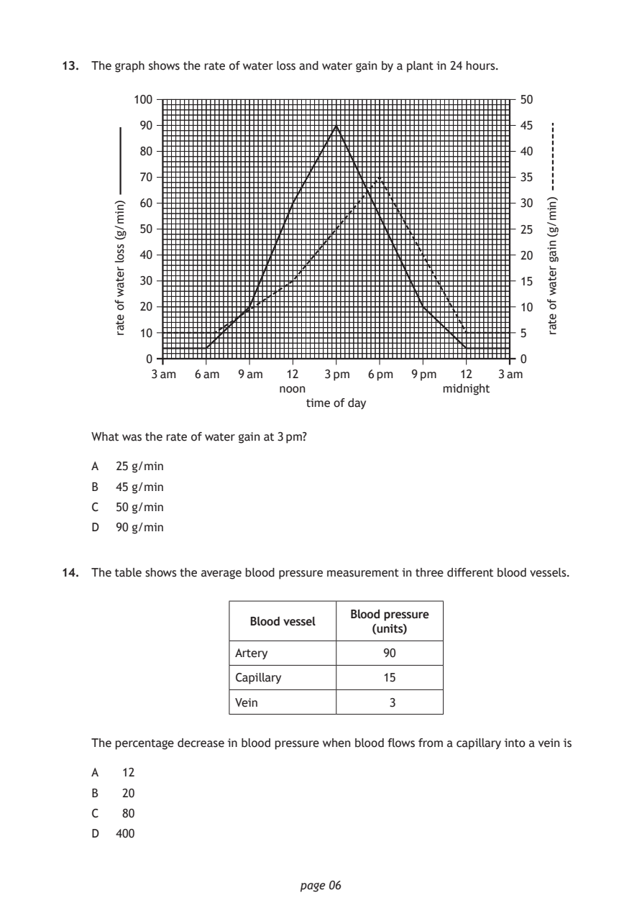
Selectable page text
13. The graph shows the rate of water loss and water gain by a plant in 24 hours.
time of day
page 06
)nim/g(
ssol
retaw
fo
etar
)nim/g(
niag
retaw
fo
etar
100 50
90 45
80 40
70 35
60 30
50 25
40 20
30 15
20 10
10 5
0 0
3 am 6 am 9 am 12 3 pm 6 pm 9 pm 12 3 am
noon midnight
What was the rate of water gain at 3 pm?
A 25 g/min
B 45 g/min
C 50 g/min
D 90 g/min
14. The table shows the average blood pressure measurement in three different blood vessels.
Blood pressure
Blood vessel
(units)
Artery 90
Capillary 15
Vein 3
The percentage decrease in blood pressure when blood flows from a capillary into a vein is
A 12
B 20
C 80
D 400PDF page 7
Paper 1, Question 15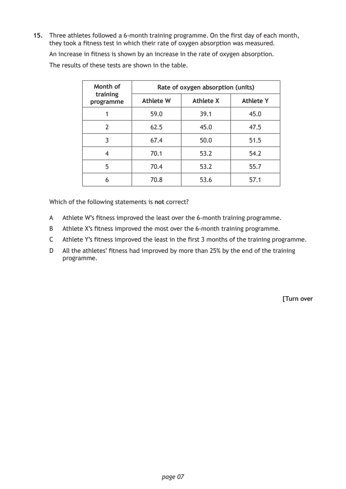
Selectable page text
15. Three athletes followed a 6‑month training programme. On the first day of each month,
they took a fitness test in which their rate of oxygen absorption was measured.
An increase in fitness is shown by an increase in the rate of oxygen absorption.
The results of these tests are shown in the table.
Month of Rate of oxygen absorption (units)
training
programme Athlete W Athlete X Athlete Y
1 59.0 39.1 45.0
2 62.5 45.0 47.5
3 67.4 50.0 51.5
4 70.1 53.2 54.2
5 70.4 53.2 55.7
6 70.8 53.6 57.1
Which of the following statements is not correct?
A Athlete W’s fitness improved the least over the 6‑month training programme.
B Athlete X’s fitness improved the most over the 6‑month training programme.
C Athlete Y’s fitness improved the least in the first 3 months of the training programme.
D All the athletes’ fitness had improved by more than 25% by the end of the training
programme.
[Turn over
page 07PDF page 8
Paper 1, Question 16Paper 1, Question 17Paper 1, Question 18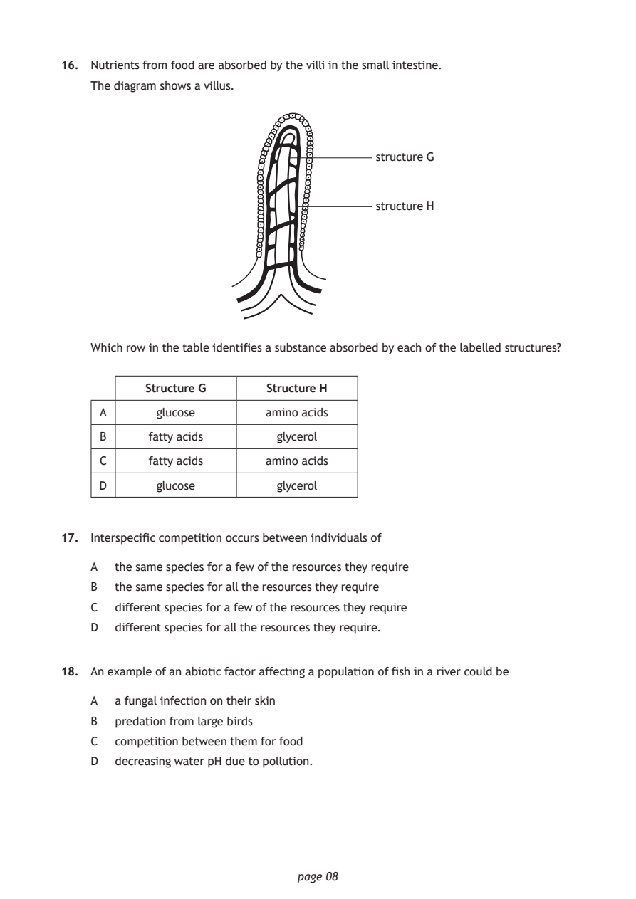
Selectable page text
16. Nutrients from food are absorbed by the villi in the small intestine.
The diagram shows a villus.
structure G
structure H
Which row in the table identifies a substance absorbed by each of the labelled structures?
Structure G Structure H
A glucose amino acids
B fatty acids glycerol
C fatty acids amino acids
D glucose glycerol
17. Interspecific competition occurs between individuals of
A the same species for a few of the resources they require
B the same species for all the resources they require
C different species for a few of the resources they require
D different species for all the resources they require.
18. An example of an abiotic factor affecting a population of fish in a river could be
A a fungal infection on their skin
B predation from large birds
C competition between them for food
D decreasing water pH due to pollution.
page 08PDF page 9
Paper 1, Question 19Paper 1, Question 20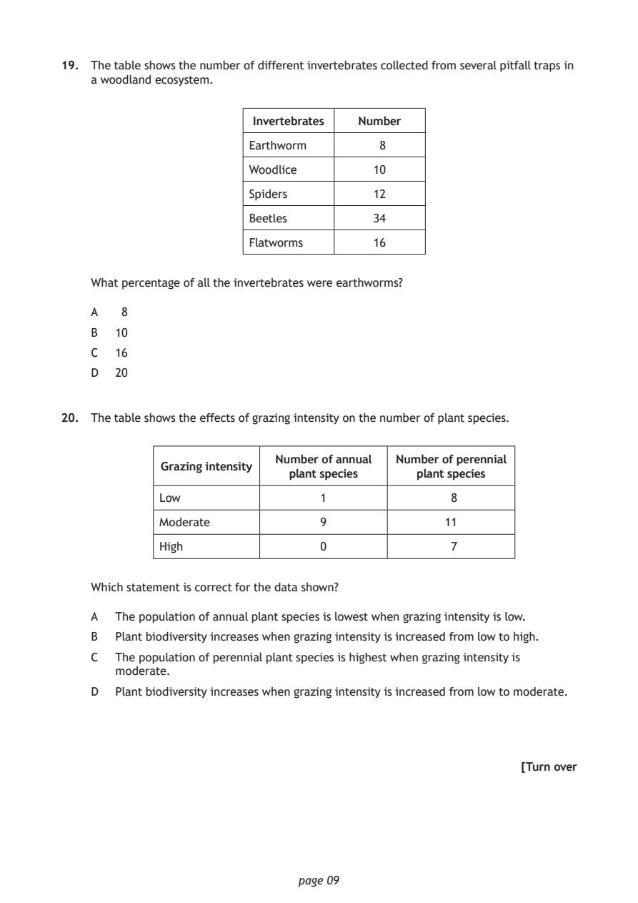
Selectable page text
19. The table shows the number of different invertebrates collected from several pitfall traps in
a woodland ecosystem.
Invertebrates Number
Earthworm 8
Woodlice 10
Spiders 12
Beetles 34
Flatworms 16
What percentage of all the invertebrates were earthworms?
A 8
B 10
C 16
D 20
20. The table shows the effects of grazing intensity on the number of plant species.
Number of annual Number of perennial
Grazing intensity
plant species plant species
Low 1 8
Moderate 9 11
High 0 7
Which statement is correct for the data shown?
A The population of annual plant species is lowest when grazing intensity is low.
B Plant biodiversity increases when grazing intensity is increased from low to high.
C The population of perennial plant species is highest when grazing intensity is
moderate.
D Plant biodiversity increases when grazing intensity is increased from low to moderate.
[Turn over
page 09PDF page 10
Paper 1, Question 21Paper 1, Question 22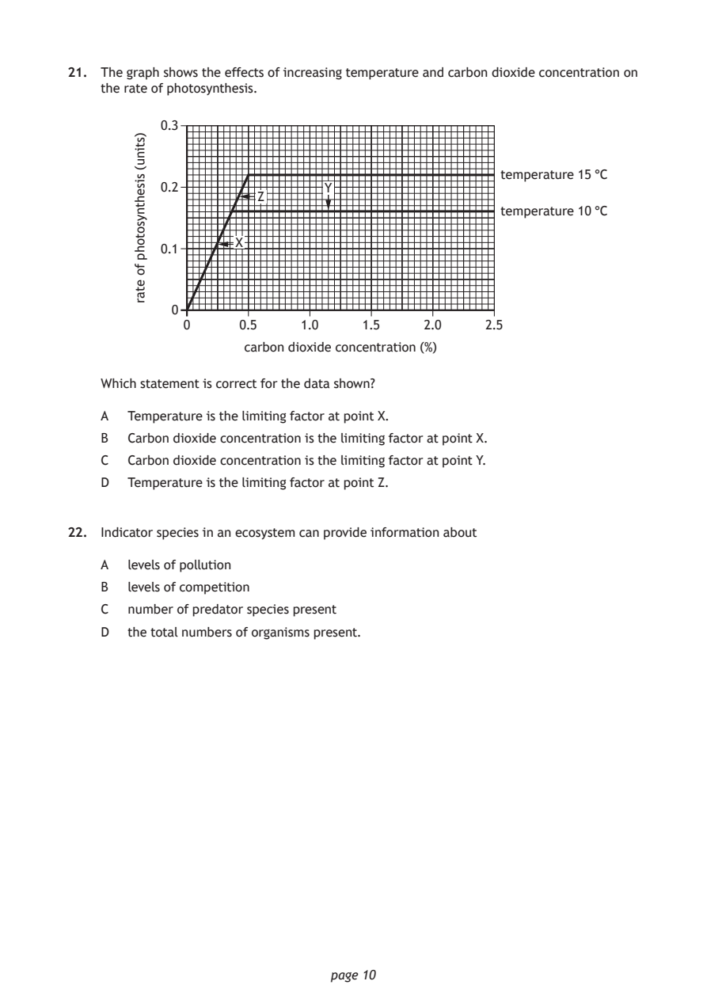
Selectable page text
21. The graph shows the effects of increasing temperature and carbon dioxide concentration on
the rate of photosynthesis.
0.3
0.2
0.1
0
page 10
)stinu(
sisehtnysotohp
fo
etar
temperature 15 °C
Y
Z
temperature 10 °C
X
0 0.5 1.0 1.5 2.0 2.5
carbon dioxide concentration (%)
Which statement is correct for the data shown?
A Temperature is the limiting factor at point X.
B Carbon dioxide concentration is the limiting factor at point X.
C Carbon dioxide concentration is the limiting factor at point Y.
D Temperature is the limiting factor at point Z.
22. Indicator species in an ecosystem can provide information about
A levels of pollution
B levels of competition
C number of predator species present
D the total numbers of organisms present.PDF page 11
Paper 1, Question 23Paper 1, Question 24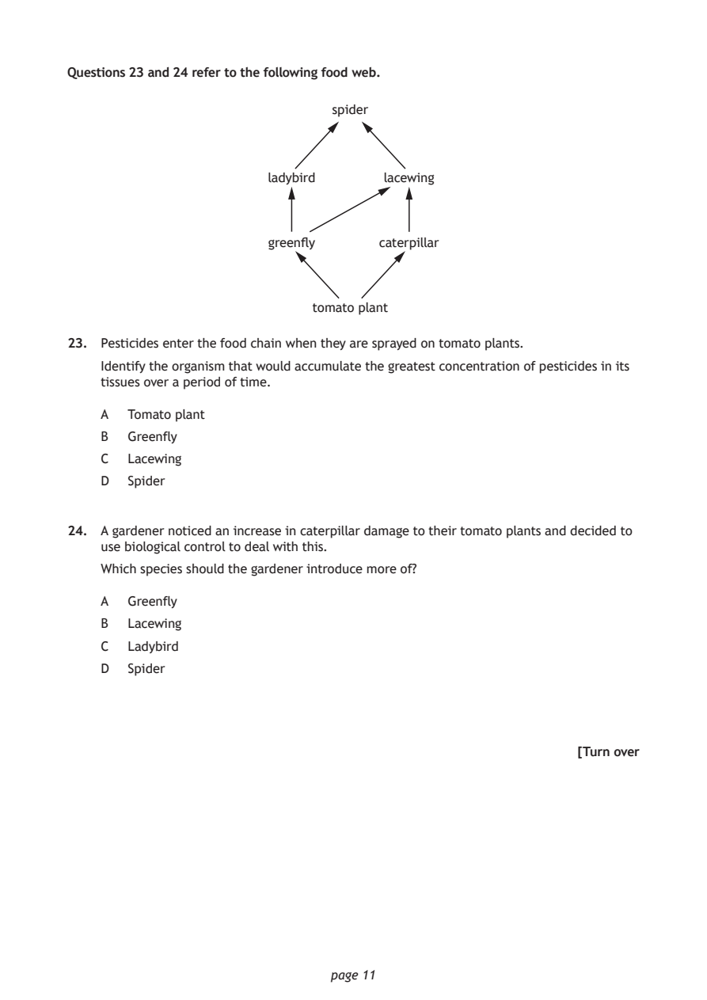
Selectable page text
Questions 23 and 24 refer to the following food web.
spider
ladybird lacewing
greenfly caterpillar
tomato plant
23. Pesticides enter the food chain when they are sprayed on tomato plants.
Identify the organism that would accumulate the greatest concentration of pesticides in its
tissues over a period of time.
A Tomato plant
B Greenfly
C Lacewing
D Spider
24. A gardener noticed an increase in caterpillar damage to their tomato plants and decided to
use biological control to deal with this.
Which species should the gardener introduce more of?
A Greenfly
B Lacewing
C Ladybird
D Spider
[Turn over
page 11PDF page 12
Paper 1, Question 25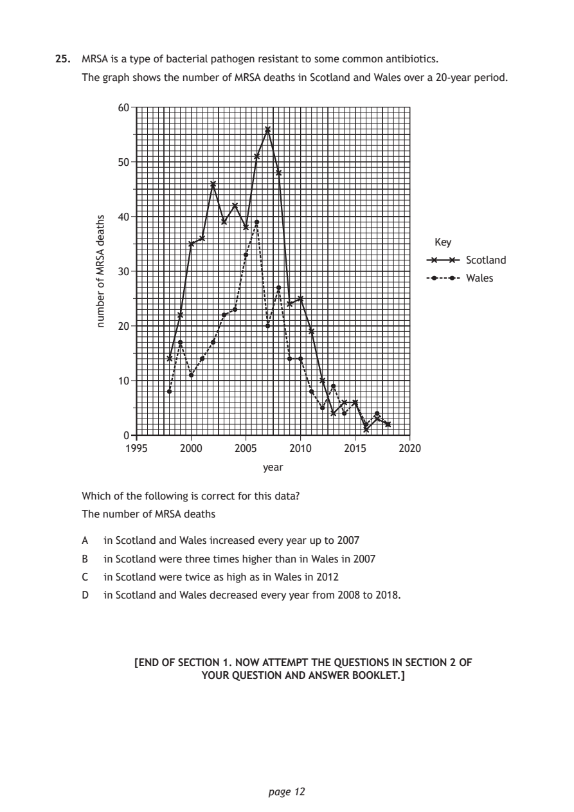
Selectable page text
25. MRSA is a type of bacterial pathogen resistant to some common antibiotics.
The graph shows the number of MRSA deaths in Scotland and Wales over a 20‑year period.
page 12
shtaed
ASRM
fo
rebmun
60
50
40
Key
Scotland
30
Wales
20
10
0
1995 2000 2005 2010 2015 2020
year
Which of the following is correct for this data?
The number of MRSA deaths
A in Scotland and Wales increased every year up to 2007
B in Scotland were three times higher than in Wales in 2007
C in Scotland were twice as high as in Wales in 2012
D in Scotland and Wales decreased every year from 2008 to 2018.
[END OF SECTION 1. NOW ATTEMPT THE QUESTIONS IN SECTION 2 OF
YOUR QUESTION AND ANSWER BOOKLET.]